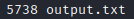
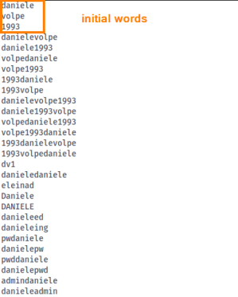

Rsmangler
Rsmangler written by Robin "DigiNija" Wood
available at
https://digi.ninja/projects/rsmangler.phpRsmangler,
will take an existing wordlist and perform various manipulations resulting in a more targeted wordlist which will
include permutations and variations of words we can in our wordlist
With these wordlist generator tools, we’ll
typically want to start with a small list of several words since just supplying a few words to start, can quickly
generate a very large file.
example:
rsmangler --file file.txt --output output.txt
wc -l output.txt #count the lines of file generated
Using our initial three-word
wordlist, and running it with Rsmangler defaults, we’ve ended up with a list of 5738 permutations, some of which can
be seen below.
